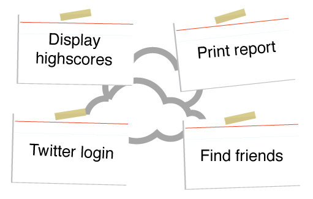

Agile software development
Created by Alexey Tomashevich
INTRODUCTION
Waterfall SDLC Model
- System and software requirements: captured in a product requirements document
- Analysis: resulting in models, schema, and business rules
- Design: resulting in the software architecture
- Coding: the development, proving, and integration of software
- Testing: the systematic discovery and debugging of defects
- Operations: the installation, migration, support, and maintenance of complete systems
Advantages
- Easy to manage due to the rigidity of the model
- Works well for smaller projects where requirements are very well understood
- Clearly defined stages
- Phases are processed and completed one at a time
- Easy to arrange tasks
- Process and results are well documented
Disadvantages
- No working software is produced until late during the life cycle
- High amounts of risk and uncertainty
- Not a good model for complex and object-oriented projects
- Poor model for long and ongoing projects
- It is difficult to measure progress within stages
- Cannot accommodate changing requirements
Spiral Model
Rapid development of understanding via experimental discovery
Rapid Application Development(RAD)
Rapid build of models, prototypes, and initial system using more advanced tools
Rational Unified Process(RUP)
Iterative and incremental development of ever large and more complex system

Statistics
In 1994 Stadish Group Chaos’s report survey noted the following:
- 31% of project will be canceled before they completed
- 53% of the project will cost more then 189% of their estimatesy
- 16% of project were completed on time and budget
- For the largest companies, completed project delivered only 42% of the original feature and function
- And incomplete requirements and specifications: 12% of all projects
Agile processes
What is Agile?

Agile is a time boxed, iterative approach to software delivery that builds software incrementally from the start of the project, instead of trying to deliver it all at once near the end.

It works by breaking projects down into little bits of user functionality called user stories, prioritizing them, and then continuously delivering them in short two week cycles called iterations.
The Manifesto for Agile Software Development
- Individuals and Interactions over processes and tools
- Working Software over comprehensive documentation
- Customer Collaboration over contract negotiation
- Responding to Change over following a plan
Principles
- Customer satisfaction by early and continuous delivery of valuable software.
- Welcome changing requirements, even in late development.
- Deliver working software frequently (weeks rather than months)
- Close, daily cooperation between business people and developers
- Projects are built around motivated individuals, who should be trusted
- Face-to-face conversation is the best form of communication (co-location)
- Working software is the primary measure of progress
- Sustainable development, able to maintain a constant pace
- Continuous attention to technical excellence and good design
- Simplicity—the art of maximizing the amount of work not done—is essential
- Best architectures, requirements, and designs emerge from self-organizing teams
- Regularly, the team reflects on how to become more effective, and adjusts accordingly
How does it work?
You make a list
You size things up
You set some priorities
You start executing
You update the plan as you go
How is Agile different?
Analysis, design, coding, and testing are continuous activities
Development is iterative
Planning is adaptive
Roles blur
Scope can vary
Requirements can change
Working software is the primary measure of success
User Stories
- User stories are features our customers might one day like to see in their software.
- Typically no more than a couple days work, they form the basis of our Agile plans.
- We get them by sitting down with our customers and asking lots of questions.
Estimation
The fine art of expectation guessing
Iterations
Agile's engine for getting things done
Planning
The fine art of expectation setting
If we sum all, we get somthing like Scrum model

THE END
Source:
- agilenutshell.com
- Dean Leffingwell Agile Software Requirements
- habr.com